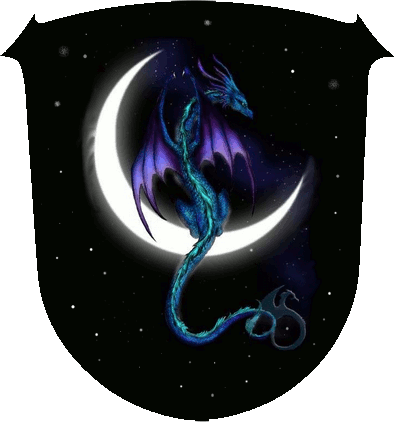

|

|
Das schwarze Brett
|
|
| Übersicht,
Anschläge und Stammtisch (RPG) |
|
Unbekannte Frau mit Kind
|
Berenike
  |
vor einigen Tagen kam ich mit meinen Begleitern von einer langen Reise zurück.
Kurz bevor wir meine kleine Stadt, Nell´s Burg, auf Cappu erreichten
fanden meine Begleiter eine Frau, die gerade verstorben war.
In ihren Armen lag ein kleines Kind, wohl erst einige Tage alt.
Die Frau wahr wohl edler Herkunft und vornehm gekleidet.
Diese trug einen dicken Mantel aus guter Wolle und seidene dunkelblaue Kleider.
Ein Gürtel mit uns unbekannten Schriftzeichen hielt ihre Kleidung zusammen.
Einen gut gefüllten Geldbeutel mit uns unbekannten Goldmünzen, ein goldener Ring,
ein Armreif aus Bronze waren ihr eigen.
Wer bitte kann etwas zu der Frau und dem Kind berichten ?
Freifrau Nell,
Vorsteherin von Nell`s Burg,
Verlobte des ehrenwerten Parrakus
Zur 12. Stunde am 20.Erntemond im Jahre 447 |
20.08.11 19:00
 |
|
| Jolina (RIP) |
Werte Freifrau Nell,
möge Wendaria ihre schützende Hand über das Kind halten, das so früh seine Mutter verlor. Hat sich dem Kind schon jemand angenommen, wenn ihr niemanden findet würde ich mich anbieten.
Ich kann mir im übrigen vorstellen, dass eine Abschrift der Zeichen Erhellung bringen könnte.
Liebe Grüße
Kardinälin Jolina,
Vorsteherin von Asini,
Kardinälin im Dienste des einzig wahren Glaubens an Wendaria,
jüngste Dekanin der Scherbe
Zur 19. Stunde am 20.Erntemond im Jahre 447 |
20.08.11 20:49
|
|
Berenike
|
Anschlag:
Hiermit gebe ich bekannt, das ich ab dem heutigen Tage
Jeremias Saimerej als meinen Sohn anerkenne,
Jeremias wird mit allen Rechten und Pflichten eines
leiblichen Sohnes ausgestattet.
Er wird eines Tages mein Erbe sein.
So bitte ich alle Freunde und Nationsmittgliedern ihm freundschaftlich
mit Rat und Tat zu unterstützen.
gez
Nell
*diesen Anschlag am Rathaus anbringt*
Freifrau Nell,
Vorsteherin von Nell`s Burg,
Verlobte des ehrenwerten Parrakus
Zur 6. Stunde am 41.Erntemond im Jahre 447 |
25.08.11 15:13
|
|
| Jeremias Saimerej (RIP) |
*Ein noch unbekanntes Gesicht,unauffällig in den Schatten der Stadtmauern wandert, jenen Aushang und worte verfolgt. In einem kurzem Schein der Sonne ist der goldenen Ring an seiner hand, an jenem jungem Mann zu erkennen. Mit den Euch unbekannten Schriftzeichen...*
Jeremias Saimerej
Zur 16. Stunde am 88.Erntemond im Jahre 447 |
05.09.11 16:44
|
|
Calypso
|
Es soll Untotö gebön, die einön altern lassön. Iisch möschte allerdiings betonön, dass der Konvent Margiintanors damit niischts zu tun ´at. Vielleischt kann der Konvent Olimaniirs etwas dazu sagön. Schwarzö Magie iist es aber auf jedön Fall, denke iisch.
Calypso |
08.09.11 10:47
|
|
Berenike
|
Magie ? Dann ist es sicher eine Magie der Guten !
Mein Sohn Jeremias wächst schnell und entwickelt sich wunderbar.
Wie doch die Zeit doch rennt !
Eben noch saß er auf meinem Schoss und nun läuft er schon alleine seine ersten Schritte.
Bald wird er erwachsen und ein großer Krieger sein.
Jeremias geht auch schon mit meinen Jägern zur Jagt und lernt fleißig.
Es ist schon ein kleinen Wunder und ein grosses Geschenk für mich.
Freifrau Nell,
Vorsteherin von Nell`s Burg,
Mutter von Jeremias
Zur 18. Stunde am 15.Dunkelfrost im Jahre 447 |
09.09.11 16:26
|
|
| Vantress (RIP) |
Werte Bewohner der Scherbe,
Jeremias Saimerej kam vor einiger Zeit in mein Rathaus und wollte sich vorstellen. Ein junger Recke, der trotz seines geringen Alters wohlerzogen und selbstsicher erschien.
Er suchte eine Heimat und ein Platz zum Arbeiten. Nach längeren Gesprächen zeigte ich ihm ein wenig die Ländereien um meine Stadt. Es gefiel ihm und er begann eine kleine Schmiede und Erzmine zu errichten.
Möge er mit seinem Tagwerk wohlhabend und berühmt werden. Auf das keine Schneide aus seinen Feuern je brechen oder eine Rüstung nachgeben möge!
Ich melde mich aber hier nicht zu Wort, um von den Vortschritten eines jungen Scherbenbürgers zu berichten.
Ich wollte lediglich verkünden, dass dieser junge Recke, der voller Hoffnung, Mut und Begeisterung in die Fremde zog, von heute an unter meinem Schild steht!
Er ist ein junger freier Siedler, der eine neue Heimat in der ferne fand. Mögen wir viele gute Taten von ihm hören.
Wächter Vantress,
Vorsteher von Gathol Rakhâs Azaghâl
Zur 4. Stunde am 28.Dunkelfrost im Jahre 447 |
12.09.11 13:56
|
|
Berenike
|
Werter Vantress,
seit gedankt für Euren Anschlag.
Es freut mich, das Ihr meinem Sohn so freundlich unterstützt.
Die ersten Schritte fern der Heimat sind oft schwer und gefährlich !
Nun, ich bin voller Stolz und Freude wie mein Sohn sich entwickelt und welch grosse Fortschritte er in so kurzer Zeit gemacht hat.
Wir werden sicher noch viel Gutes von Ihm zu berichten haben
Freifrau Nell,
Vorsteherin von Nell`s Burg,
Mutter von Jeremias
Zur 3. Stunde am 45.Dunkelfrost im Jahre 447 |
16.09.11 13:02
|
|
| Jeremias Saimerej (RIP) |
*ein junger Mann bekleidet mit dunklen Gewändern betritt den Platz,zieht seine Kapuze herunter und es steht ein groß gewachsener Mensch mit tiefschwarzem langem Haar vor euch*
Werte Bewohner,ICH Jeremias Saimerej verfolge dieses treiben nun eine Weile und nun kennt Ihr das Gesicht zu diesem Namen.
Ich bin der Sohn der Ehrenwerten Nell wie manche schon vernommen haben.
Mein großen Dank an den werten Vantress,
Zwerg und geschätzter Freund,auf das wir das nächste Faß leeren *schmunzelt*
Ich hoffe doch auf eine gemeinsame gute Zukunft
*seine Kapuze wieder aufsetzt und den platz verlässt*
Jeremias Saimerej,
Vorsteher von Quel Esta
Zur 22. Stunde am 66.Dunkelfrost im Jahre 447 |
21.09.11 15:03
|
|
| Deirdre B. McMulenberc (RIP) |
*Betrachtet das Treiben mit sorgenvoller Miene*
unmöglich... das ist Hexenwerk *murmelt und sich lieber schnell entfernt*
Baronesse Deirdre B. McMulenberc,
Vorsteherin von Gondtyl,
Biest von Lunaé
Zur 15. Stunde am 67.Dunkelfrost im Jahre 447 |
21.09.11 19:03
|
|
| Thallian (RIP) |
Ihr könntet Ihr Bruder sein! Gibt´s ein Fest? Ich könnte ein wenig Freibier vertragen.
Sir Thallian
Zur 8. Stunde am 68.Dunkelfrost im Jahre 447 |
21.09.11 22:55
|
|
Berenike
|
aber nein,
werte Deirdre B. McMulenberc
es ist nur wunderberbare Magie.
Daran ist nichts böses und keinerlei Werk von Hexen.
Dieses kann ich Euch versichern.
Habt keine Angst, Ihr werde es sehen - das es kein Grund zur Sorge gibt.
Sondern nur Grund zur Freude
Und ein grosses Fest wird es bald geben.Mit viel Bier, Wein und reichlich guten Speisen.
Lasst nur den Winter erst einmal vorbei sein,.............
Freifrau Nell,
Vorsteherin von Nell`s Burg,
Mutter von Jeremias
Zur 18. Stunde am 68.Dunkelfrost im Jahre 447 |
22.09.11 1:20
|
|
Übersicht,
Anschläge und Stammtisch (RPG)
|
|
|
|
Dieser Beitrag
verwendet Regelvariante 1
 |
|
|